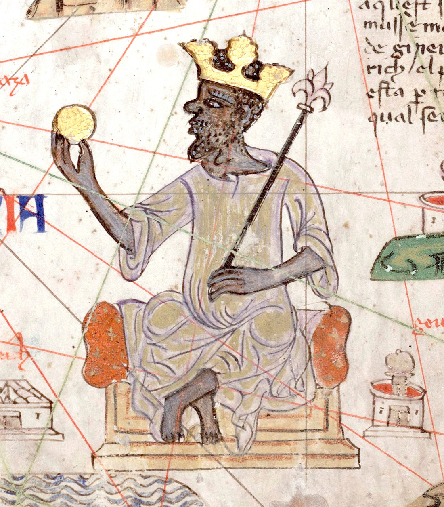
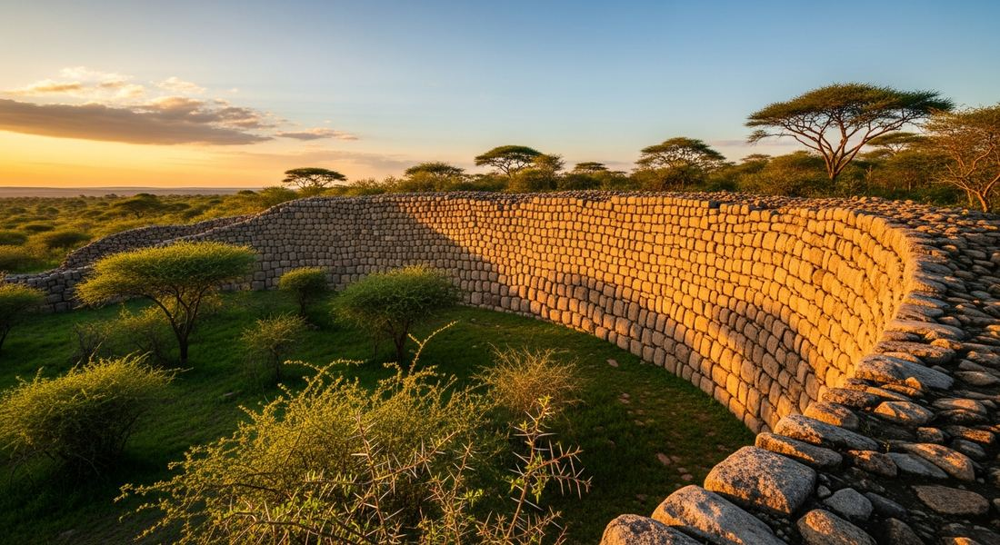

1.5 State Building in Africa
- LO-A: Mali Empire: Successor to Ghana, the Mali Empire (c. 1235–1600 CE) controlled trans-Saharan trade, especially the gold-salt exchange between West Africa and North Africa. Mansa Musa (r. 1312–1337) became the most famous African ruler in world history after his 1324–1325 pilgrimage to Mecca, traveling with 60,000 people and so much gold that he caused inflation in Egypt and Arabia. Timbuktu, under Mali, became a major center of Islamic learning with universities attracting scholars from across the Muslim world. Great Zimbabwe: A stone-walled royal complex in southern Africa (c. 1100–1450 CE), center of a Shona-speaking kingdom that grew wealthy controlling trade between the interior's cattle and gold and the Swahili coast's Indian Ocean connections. The stone walls, built without mortar using precisely cut granite, remain one of sub-Saharan Africa's most impressive architectural achievements.
- LO-B: Explain the role of Islam and trade in…: Ethiopian Solomonic Dynasty: The Solomonic Dynasty (restored 1270 CE) ruled the Christian kingdom of Ethiopia, tracing its lineage to the biblical King Solomon and the Queen of Sheba. Ethiopia was a rare example of a powerful African Christian state in this period, maintaining its religious identity while connected to trade routes from the Indian Ocean and Red Sea.
- LO-C: Explain how African rulers used trade networks to…: Swahili city-states: A series of Islamic trading cities along East Africa's coast (Kilwa, Mombasa, Malindi, Zanzibar) that connected the African interior's gold, ivory, and enslaved people to Indian Ocean networks reaching Arabia, India, and China. The "Swahili" language itself, a Bantu language with heavy Arabic loanwords, reflects this coastal culture's hybrid African-Islamic identity.
Try each question before revealing the answer.
1. African rulers who converted to Islam often maintained traditional African religious practices alongside their Islamic identity. What does this "syncretic" pattern suggest about how religion spreads into new regions?
2. The Mali Empire's wealth derived primarily from controlling the trans-Saharan gold-salt trade rather than from agricultural production alone. What does this suggest about the relationship between geography and state formation?
3. Mansa Musa's pilgrimage to Mecca in 1324–1325 reportedly caused significant inflation in Egypt and Arabia through his distribution of gold. What does this episode reveal about Mali's place in the global economy?
4. Great Zimbabwe was built without writing, wheels, or iron tools for masonry. What does its construction reveal about the capabilities of its builders?
5. The Swahili language combines Bantu African grammatical structure with heavy Arabic vocabulary. What does this linguistic fact tell us about the historical processes that shaped East African coastal culture?
- Explain how and why states in Africa were established, expanded, and maintained
- Explain the role of Islam and trade in shaping African political and cultural life
- Explain how African rulers used trade networks to build wealth and political power
Tap a term for its definition.
-
Definition: A West African empire (c. 1235–c. 1600 CE) founded by Sundiata Keita that controlled the trans-Saharan gold-salt trade; successor to the Ghana Empire. Significance: At its height the wealthiest and largest empire in West Africa; Timbuktu became a major center of Islamic learning; Mansa Musa's reign (1312–1337) put Mali on the world map through his famous pilgrimage to Mecca.
-
Definition: Ruler of the Mali Empire (r. 1312–1337 CE), famous for his 1324–1325 pilgrimage to Mecca during which he distributed so much gold that he caused inflation across Egypt and Arabia. Significance: Demonstrated Mali's extraordinary wealth and its integration into the Islamic world; his pilgrimage drew European cartographers' attention to West Africa's gold; he patronized mosque construction and Islamic scholarship at Timbuktu, including Sankore University.
-
Definition: A network of overland trade routes crossing the Sahara Desert using camel caravans to exchange West African gold and enslaved people for North African salt, textiles, and manufactured goods. Significance: The economic foundation of West African empires (Ghana, Mali, Songhai); connected sub-Saharan Africa to the Mediterranean world; camel caravans made the "impossible" crossing of the Sahara regular commerce.
-
Definition: A large stone-walled royal complex in present-day Zimbabwe (c. 1100–1450 CE), center of a Shona-speaking kingdom controlling trade between the interior and the Swahili coast. Significance: The most impressive stone architecture in sub-Saharan Africa, built without mortar; "Zimbabwe" means "great stone house" in the Shona language; its existence was denied by European colonialists who falsely claimed it was built by non-Africans.
-
Definition: A series of Islamic trading city-states along East Africa's coast (including Kilwa, Mombasa, Malindi, Zanzibar) that traded African gold, ivory, and enslaved people for goods from Arabia, India, and China. Significance: Connected sub-Saharan Africa to Indian Ocean networks; the Swahili language (Bantu + Arabic) reflects the cultural fusion of African and Islamic influences; Kilwa was reportedly the wealthiest city in sub-Saharan Africa at its height.
-
Definition: The ruling dynasty of Ethiopia (restored 1270 CE), claiming descent from King Solomon of Israel and the Queen of Sheba (Makeda); the Ethiopian Orthodox Christian kingdom they led. Significance: One of the world's oldest continuously Christian states; maintained independence from Islamic expansion; produced the Kebra Nagast, a foundational Ethiopian Christian text claiming Ethiopia's special relationship with God; connected to Indian Ocean trade via the Red Sea.
-
Definition: A group of independent city-states in present-day northern Nigeria (c. 1000–1800 CE), including Kano, Katsina, and Zaria, that controlled trade and developed urban commercial cultures. Significance: Gradually adopted Islam (especially from the 14th–15th centuries) through contact with trans-Saharan traders; developed skilled textile production and leatherwork; later conquered by the Sokoto Caliphate in 1804.
-
Definition: Professional oral historians, storytellers, musicians, and praise singers in West African societies who preserved genealogies, histories, and moral lessons through performance and memory across generations. Significance: In societies without widespread literacy, griots were the institutional memory of kingdoms. They preserved oral records of rulers, wars, and events that might otherwise be lost. Their traditions remain a living practice in West Africa today.
The Mali Empire: Gold, Salt, and Islamic Governance

Mansa Musa depicted in the 1375 Catalan Atlas, one of the first European maps to accurately represent West Africa. He is shown holding a gold nugget, reflecting European awareness of Mali's extraordinary wealth. AI-generated illustration (Google Gemini, 2025), commercially licensed.
In the 13th century, a king named Sundiata Keita unified the Mande-speaking peoples of West Africa and founded the Mali Empire, successor to the earlier Ghana Empire. Mali's power rested on a simple geographic fact: the empire sat astride the trans-Saharan trade routes connecting West Africa's gold-producing regions (to its south) with North African merchants and the broader Islamic world (to its north). By controlling the trade routes, Mali's rulers could tax every caravan that crossed their territory, a revenue stream that made Mali one of the wealthiest states in the world.
The most famous ruler of Mali was Mansa Musa (r. 1312–1337 CE). In 1324–1325, he undertook the hajj, the Islamic pilgrimage to Mecca, in a style designed to demonstrate Mali's wealth to the entire Islamic world. His entourage reportedly included 60,000 people, 12,000 enslaved servants, 500 heralds carrying golden staffs, and 80–100 camels each carrying 300 pounds of gold. As he traveled through Egypt and Arabia, he distributed gold so lavishly that he triggered significant inflation in the local gold markets, the influx of gold so dramatically increased its supply that the metal's value fell noticeably for over a decade. European cartographers, hearing of this extraordinary pilgrimage, began placing Mali and its gold on their maps, putting sub-Saharan Africa in the mental landscape of Mediterranean Europeans for the first time.
Under Mansa Musa's patronage, Timbuktu became one of the world's great centers of Islamic learning. The city's Sankore Mosque functioned as an informal university attracting scholars from across the Muslim world. At its height, Timbuktu may have housed 25,000 students and a library collection of 700,000 manuscripts. The city exemplifies how Islam shaped West African intellectual life: Arabic literacy brought not only religious knowledge but also access to the broader Islamic world's mathematical, scientific, historical, and literary traditions.
Great Zimbabwe: Stone Architecture and Indian Ocean Trade

The Great Enclosure at Great Zimbabwe, walls up to 11 meters high built without mortar using precisely cut granite blocks. The complex was the center of a Shona kingdom that controlled trade between the African interior and the Indian Ocean coast. AI-generated illustration (Google Gemini, 2025), commercially licensed.
In southern Africa, far from the trans-Saharan routes, a different kind of wealth and power emerged. Great Zimbabwe, "great stone house" in the Shona language, was a royal complex of stone-walled enclosures built between approximately 1100 and 1450 CE in present-day Zimbabwe. Its most dramatic feature is the Great Enclosure: an oval stone wall up to 11 meters (36 feet) high and 250 meters in circumference, constructed from hundreds of thousands of precisely cut granite blocks stacked without mortar. The weight and precision of the stone cutting provided structural stability that has kept these walls standing for seven centuries.
The kingdom centered at Great Zimbabwe grew wealthy by controlling trade between the cattle-rich interior of southern Africa (where cattle were the primary measure of wealth) and the Swahili coast's Indian Ocean connections. Merchants from Great Zimbabwe traded gold and ivory to Swahili port cities in exchange for luxury goods, Chinese porcelain, Persian glass beads, and Indian cloth, that have been found in abundance at the archaeological site. At its height, the Great Zimbabwe state may have controlled much of the gold trade linking the African interior to the Indian Ocean network.
The Swahili Coast: Africa's Indian Ocean Gateway
Along East Africa's coast, from present-day Somalia south through Kenya, Tanzania, and Mozambique, a series of Islamic trading city-states emerged that served as the primary interface between the African interior and Indian Ocean commerce. These Swahili city-states, including Kilwa (in present-day Tanzania), Mombasa, Malindi, and Zanzibar, grew wealthy by taxing the trade of gold, ivory, enslaved people, and exotic animal products from the interior, exchanging these African products for porcelain, textiles, and manufactured goods from Arabia, India, and China.
The Swahili civilization was a genuine cultural fusion. The Swahili language itself encodes this history: its grammatical structure is Bantu African, while its vocabulary includes thousands of Arabic loanwords accumulated over centuries of commercial contact. The architecture of the Swahili city-states, stone mosques, coral-built townhouses, Arabic-style arched doorways, reflected Islamic influence, while the social structure and kinship systems reflected African foundations. Swahili rulers adopted Islam to facilitate trade with Muslim merchants from Arabia and India, much as Southeast Asian port rulers converted for similar reasons.
The wealth of the Swahili coast was reflected in the luxury goods found archaeologically: Chinese celadon porcelain from the Song and Ming dynasties, Persian glazed pottery, Indian cotton cloth, and glass beads from the Middle East appear throughout coastal city-states, demonstrating their deep integration into the Indian Ocean trading world.
Ethiopia: A Christian Kingdom at Africa's Crossroads
While much of East and West Africa adopted Islam by the 13th–14th centuries, the Ethiopian highlands maintained a distinctively Christian identity. The Solomonic Dynasty, restored to power in 1270 CE, traced its lineage to the legendary union of the biblical King Solomon and the Queen of Sheba, an origin myth enshrined in the Kebra Nagast ("Glory of Kings"), a foundational Ethiopian Christian text composed or compiled around this period. This Solomonic claim gave Ethiopian rulers enormous religious legitimacy, presenting the kingdom as specially chosen by God and custodians of the original Ark of the Covenant.
Ethiopia's Christian identity was not merely symbolic. It shaped its foreign relations, architecture, and cultural life. The Ethiopian Orthodox Church produced manuscripts, ecclesiastical art, and architecture (the famous rock-hewn churches of Lalibela, carved out of solid rock in the 12th–13th centuries) of remarkable quality. Ethiopia maintained connections to other Christian communities, the Coptic Christians of Egypt, the Armenian Church, and eventually to European Christians who sought alliances with the legendary "Prester John" (a mythical Christian king believed to rule beyond the Islamic world, sometimes identified with the Ethiopian emperor).
Hausa City-States and Oral Traditions
In central West Africa (present-day northern Nigeria), the Hausa city-states developed as independent urban commercial centers from roughly the 10th century onward. Kano, Katsina, Zaria, Gobir, and others developed specialized economies. Kano was famous for its leather and textile production, Katsina for its role as a commercial crossroads. Unlike the Mali Empire, the Hausa states did not form a single political unit; they were independent city-states that competed and cooperated with one another.
Islam spread gradually to the Hausa states through contact with trans-Saharan merchants, becoming increasingly prominent among ruling elites from the 14th–15th centuries. However, as in Mali, Islam coexisted with indigenous spiritual practices among the general population, a syncretic blending that was common across sub-Saharan Africa.
One of the distinctive features of West African historical culture was the role of griots, professional oral historians, storytellers, musicians, and praise singers who maintained the historical memory of kingdoms and lineages through performance and memorization. In societies where Arabic literacy was confined to religious scholars and scribes, griots were the institutional memory: they preserved genealogies of ruling families, histories of wars and alliances, and the moral lessons embedded in ancestor stories. The oral tradition of the griots is itself historically significant. It demonstrates that deep historical awareness and cultural transmission can take oral rather than written forms, and that oral records can preserve information across many generations with remarkable reliability.
These videos will help you review State Building in Africa and solidify key concepts before your exam.
- Mali controlled a significant portion of the global gold supply and was deeply integrated into the wider Islamic world economy
- Mali's economy was primarily agricultural, with gold playing a secondary role
- Mansa Musa's pilgrimage was primarily a political act designed to show military strength
- Egypt and Arabia were economically dependent on Mali for their basic needs
- Agricultural surpluses from intensive rice farming in the Zambezi River valley
- Manufacturing and exporting luxury textiles to markets in Arabia and India
- Trans-Saharan trade connecting Great Zimbabwe to North African markets
- Controlling trade routes connecting the gold and ivory of the interior with Indian Ocean commerce via the Swahili coast
- Mali's rulers converted to Islam primarily to gain military allies against neighboring pagan kingdoms
- Timbuktu's scholars focused exclusively on religious study and rejected the secular sciences preserved in Arabic texts
- Islam in Mali became a vehicle for both trade networks and intellectual prestige, integrating the empire into the broader world of Dar al-Islam
- Mansa Musa's hajj was primarily a commercial expedition designed to establish direct trade routes between Mali and Arabia, bypassing North African intermediaries
- Arab military conquest of the East African coast that forced local Bantu peoples to adopt Arab language and religion
- Long-term commercial interaction between East African Bantu communities and Indian Ocean trading partners, producing a culturally hybrid civilization
- The deliberate policy of Swahili rulers to replace indigenous African cultural practices with Islamic ones as a marker of elite status
- Chinese tributary missions under Zheng He that incorporated East African ports into a Chinese-dominated maritime trade system
- Sub-Saharan African societies lacked the capacity to preserve historical memory before the introduction of Arabic writing by Muslim merchants
- Griot tradition was unique to Mali and did not exist in other West African societies that developed under different political systems
- The Sundiata epic is historically unreliable because oral histories always distort facts through mythologization and political bias
- Oral tradition served as a sophisticated and durable form of historical record-keeping in societies that did not rely primarily on written texts
Answer parts A, B, and C. Direct, specific responses only. Do not write an essay.
Part A
Briefly describe ONE way the Mali Empire used control of trade to build and maintain political power.
Part B
Briefly explain ONE way Islam shaped political or cultural life in an African state c. 1200–1450.
Part C
Briefly explain ONE way the Swahili city-states connected sub-Saharan Africa to the broader Indian Ocean trading world.
Write a full essay with thesis, contextualization, evidence, and historical reasoning. The prompt asks about extent. You must argue a position and acknowledge other factors (geography, religion, military power, agriculture). Historical reasoning skill: Causation / Argumentation.